대외활동·공모전 — 새 유료 경로 시안
2026-11-25 · 설계 문서 docs/designs/paid-gate-activities.md 의 화면 시안 · 왼쪽이 지금 앱, 오른쪽이 새 경로
무엇을 찍었나. 지금 앱에 떠 있는 실제 활동 글 여섯 건이다. 글마다 원문(게시판 본문 · 포스터 · 첨부)을 읽어 카드를 쓰고, 앱 사본에 얹어 실제 화면을 찍었다. 그림을 그린 것이 아니다.
카드 글은 유료 API 가 쓴 것이 아니다. 이 세션의 Claude 가 설계 문서의 규칙(문장은 다듬어도 사실은 그대로 · 줄마다 원문 근거)대로 직접 읽고 썼다. 돈은 들지 않았다. 실제 유료 모델이 쓰면 문장이 조금 다를 수 있다.
저장소의 앱은 바뀌지 않았다. 앱 파일 셋의 사본에만 새 경로를 붙였고, 학생 화면에는 아무 영향이 없다.
근거 대조. 줄마다 붙인 원문 근거 123개 가운데 103개는 받은 글자 원문에 그대로 있었다. 나머지 20개는 포스터 그림에서 읽은 문구다(해커톤 글은 글자 원문이 없다).
새 경로 화면은 「더 보기」를 펼친 모습이다. 실제 첫 화면에서는 「공고 안내」가 다섯 줄까지 보이고 나머지는 「더 보기」 안에 있다(지금 앱의 규칙 그대로).
1. 서울 야간경제 활성화 해커톤
한국외국어대학교 게시판 · 본문이 포스터 한 장뿐인 글 · 읽은 곳: 포스터 그림
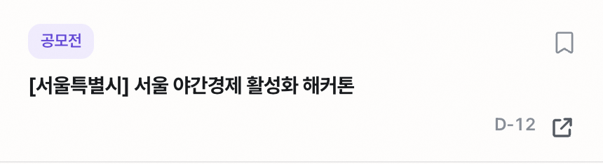
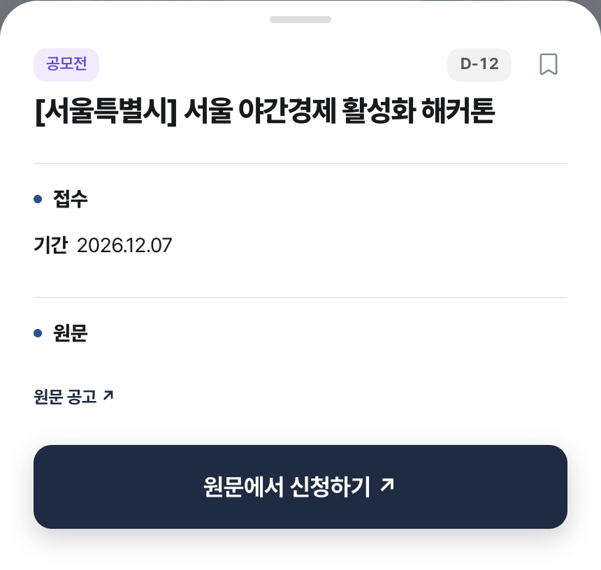
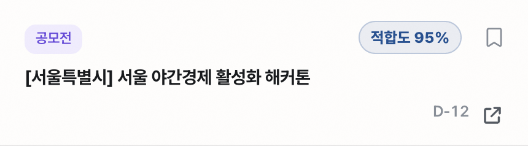
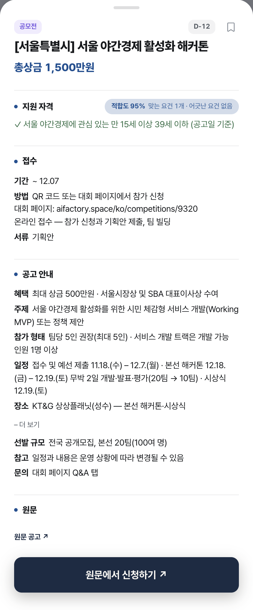
- 지금은 마감일 한 줄뿐이다. 포스터에 있는 내용이 화면에 하나도 없다.
- 새 경로는 참가 대상(만 15세 이상 39세 이하)을 읽어 적합도가 나온다. 총상금, 접수 방법, 일정, 장소가 보인다.
2. 대학혁신지원사업 수기공모전
한국외국어대학교 게시판 · 포스터 + 신청서(한글 파일) + 유의사항(PDF) · 읽은 곳: 포스터 그림과 첨부 두 개의 글자
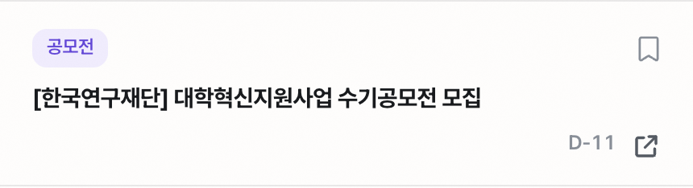
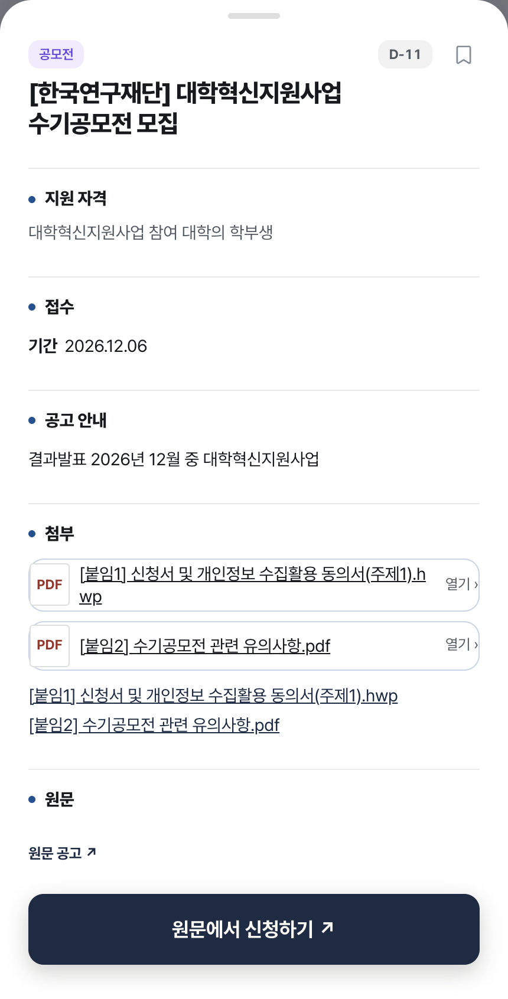
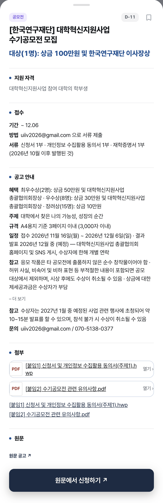
- 지금은 「공고 안내」에 끊긴 줄 하나(「결과발표 2026년 12월 중 대학혁신지원사업」)만 있다. 내는 방법과 서류가 없다.
- 새 경로는 내는 곳(전자 우편), 서류 세 가지, 시상 내역, 일정, 유의사항이 보인다.
- 첨부 구분: 신청서는 「학생이 채워 내는 서식」, 유의사항은 「읽는 글」로 갈랐다.
3. 2026 KAU 리빙랩 아이디어 공모전
한국항공대학교 게시판 · 본문에 글자가 다 있는 글 · 읽은 곳: 게시판 본문과 제출양식(한글 파일)
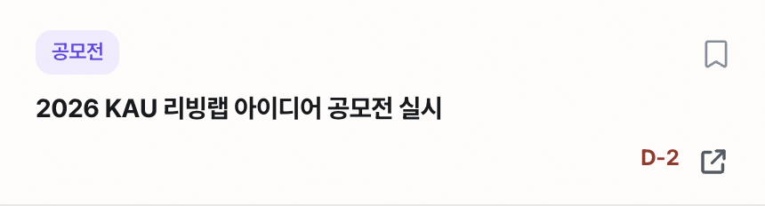
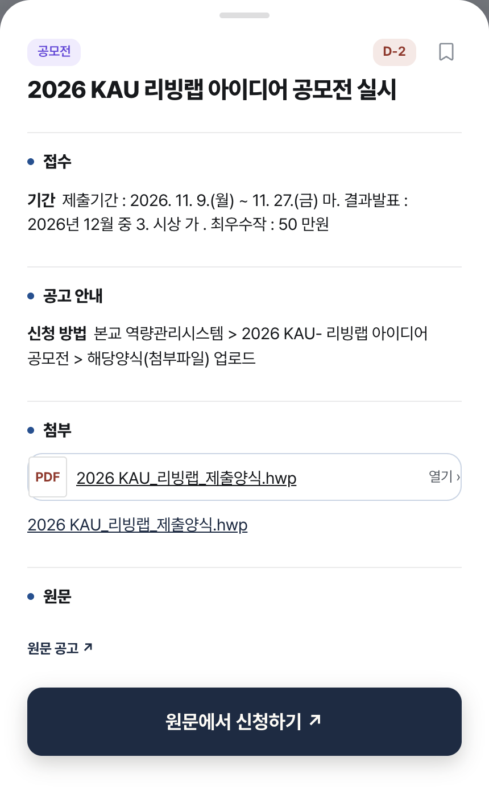
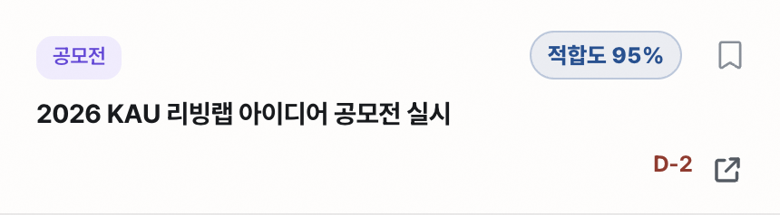
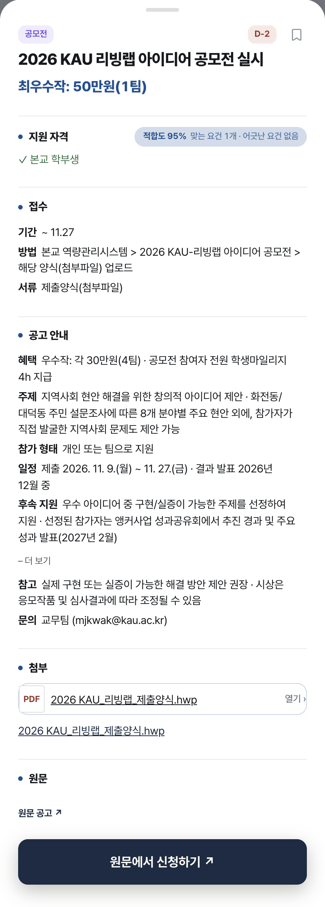
- 지금은 기간 줄에 뒤 문장이 붙어 나온다(「… 마. 결과발표 : 2026년 12월 중 3. 시상 가 . 최우수작 : 50 만원」). 본문에 「자격 : 본교 학부생」이 있는데도 자격 칸이 없다.
- 새 경로는 자격이 나와 적합도가 붙고, 내는 방법·서류·시상·일정이 칸마다 들어간다.
- 첨부 구분: 「제출양식.hwp」는 학생이 채우는 서식이다. 지금은 공고문 사본으로 분류돼 있다. 새 경로에서는 변환 로봇이 AI 의 구분을 받아 신청서 칸으로 옮긴다(이 시안 화면에는 아직 반영되지 않았다).
4. 제2회 성신 SNS 홍보 영상 공모전
성신여자대학교 게시판 · 본문이 긴 글 · 읽은 곳: 게시판 본문과 지정양식(한글 파일)
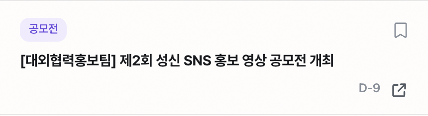
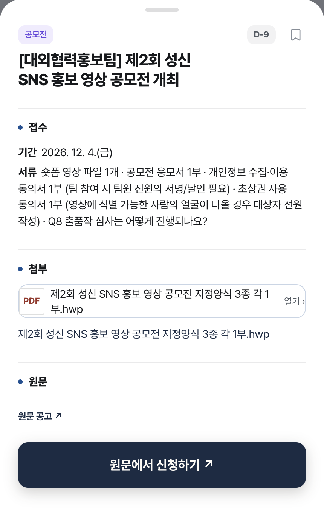
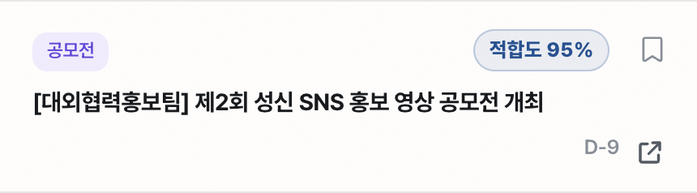
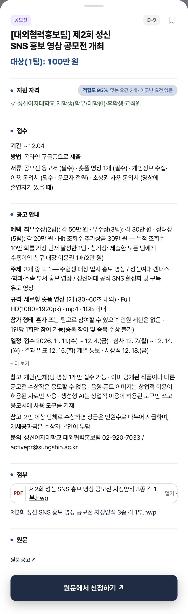
- 지금은 자격 칸이 없다. 로봇이 자격으로 뽑은 아홉 줄이 전부 상금 줄(「각 50만 원」 …)이라 화면에서 걸러졌다. 서류 칸 끝에는 질문 제목(「Q8 출품작 심사는 어떻게 진행되나요?」)이 섞여 있다.
- 새 경로는 자격(재학생·휴학생·교직원)이 나오고, 서류 네 가지가 깔끔하게 보인다. 주제·규격·일정이 한 줄씩 정리된다.
- 첨부 구분: 「지정양식 3종」도 학생이 채우는 서식인데 지금은 공고문 사본으로 분류돼 있다.
5. 쉽고 바른 정보통신기술(ICT) 공공언어 웹툰 공모전
전국 글(학교가 아닌 기관 게시판에서 주운 글) · 읽은 곳: 게시판 본문과 포스터 그림
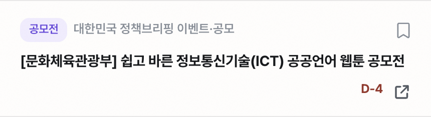
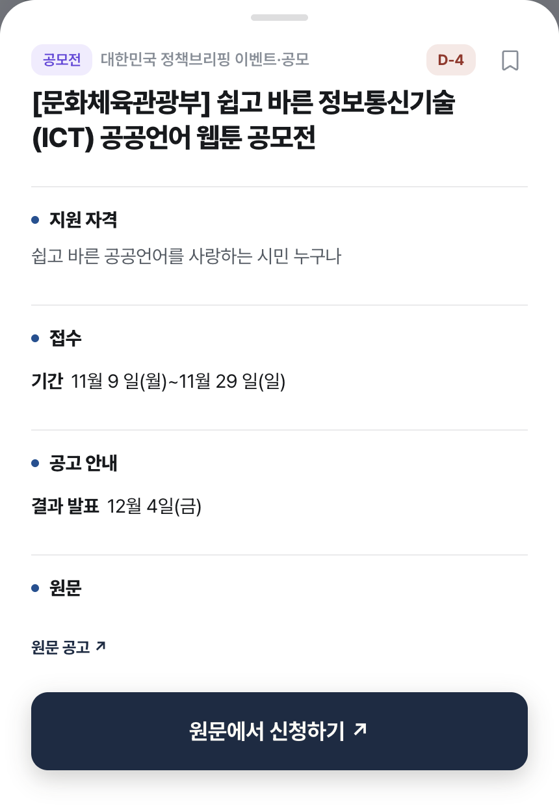
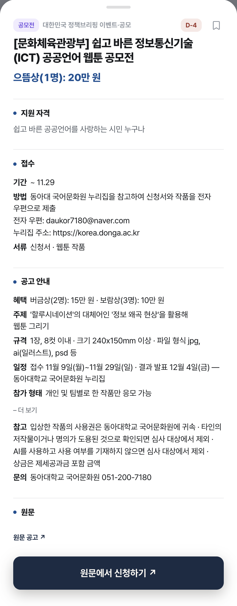
- 지금은 대상·접수 기간·결과 발표 세 줄이다.
- 새 경로는 내는 곳(전자 우편 주소), 서류, 시상 내역, 작품 규격, 유의사항이 보인다.
- 눈에 띈 것: 카드 윗줄의 「대한민국 정책브리핑 이벤트·공모」는 이 글을 찾은 곳이지 주최가 아니다. 원문의 주최는 문화체육관광부다. 이 시안은 윗줄을 바꾸지 않았다(설계 문서 12절의 「나중에 정할 것」).
6. KT랜선야학 대학생 멘토 선발 — 목록에서 내려가는 글
서울과학기술대학교 게시판 · 선발 안내문과 지원서가 첨부된 글 · 읽은 곳: 게시판 본문과 선발 안내문
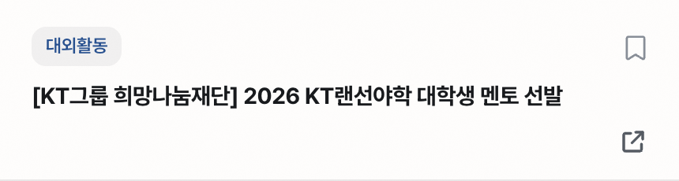
마감 표시 없이 열린 글처럼 목록에 떠 있다.
선발 안내문의 「제출 마감 : 2026. 4. 6.(월)」을 읽어 마감이 지난 글로 내려간다.
- 이 글은 2026-03-23 에 올라왔고 4월 6일에 마감됐다. 지금 로봇은 마감을 읽지 못해 열린 글로 싣고 있다.
- 지금 자격 칸에 든 줄도 틀렸다. 「교육대상 : 서울지역 중학생」은 지원자가 아니라 멘토가 가르칠 학생이다.
시안을 만들며 정한 것(설계 문서에 반영한다).
- 「공고 안내」는 지금도 여덟 줄까지만 보인다. 그래서 AI 의 안내 줄에는 이름표(주제 · 규격 · 참가 형태 · 일정 · 장소 · 유의사항 · 문의)를 붙이게 하고, 화면은 같은 이름표끼리 한 줄로 묶는다.
- 자격 칸에는 사람의 조건만 넣는다. 팀 구성과 작품 규격은 안내 칸으로 보낸다. 적합도 판정이 흐려지지 않게 하려는 것이다.
- 상금이 여러 등급이면 첫 줄이 제목 아래 큰 글씨로 가고 나머지는 「혜택」 한 줄로 묶인다.
- 「접수」의 기간 줄은 마감일만 보인다(「~ 12.07」). 접수 시작일은 「공고 안내」의 일정 줄에 있다.